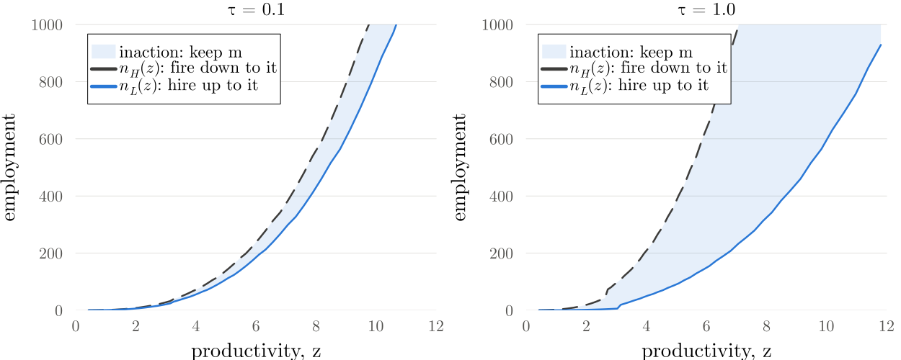
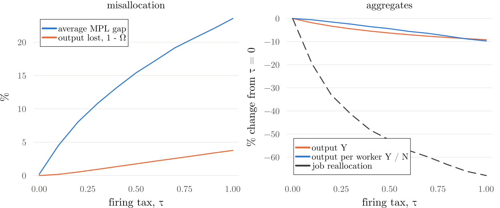

EC991 Topics in Macroeconomics · Week 6 Lab
Week 5's firms chose labour afresh every period. This week firing a worker costs τ, so the employment a firm brings into the period becomes a state. Firms then keep their workers inside an inaction region, marginal products differ across firms, and labour is misallocated.
In VS Code, open your EC991 folder and choose Pull in the Source Control pane, or from a terminal:
cd EC991 # wherever you cloned it in week 1
git pullA new folder appears next to week05:
EC991/
└── week06/
└── lab/
├── week06_code_guide.html # this page
└── EC991Week6/ # the package: all the code
├── Project.toml, Manifest.toml, README.md
├── src/
├── run/
└── test/Then copy the whole lab folder into your own repository and commit it, as in earlier weeks.
cp -R EC991/week06/lab ec991-work/week06Copy-Item -Recurse EC991\week06\lab ec991-work\week06the folder ec991-work/week06/EC991Week6 exists and git log --oneline -1 in ec991-work shows your commit.
A firm starts the period with productivity $z$ and inherited employment $m$, and chooses employment $n$. Letting workers go costs $\tau \max\{0, m - n\}$, so its value depends on $(z, m)$ (tutorial slides 3 and 4):
$$V(z, m) = \max_{n \ge 0} \Big\{ p z n^{\eta} - n - p c_f - \tau \max\{0, m - n\} + \beta \max\Big\{ -\tau n,\ \mathbb{E}\big[V(z_{t+1}, n) \mid z_t = z\big] \Big\} \Big\} .$$In calendar time $m = n_{t-1}$ and $n = n_t$. Exit is decided after producing, and costs $\tau n$ next period: the firm fires everyone.
| Step (slide 6) | Week 5 | Week 6 |
|---|---|---|
| Set-up: grids, $F$, $g$ | Industry, setup | Economy, setup: adds the grid for employment |
| 1. The firm's problem at a trial price $p$ | static_decisions, solve_firm | solve_firm: employment is now a dynamic choice |
| 2. The price, by bisection on free entry | entry_value, solve_price | the same, with $V(z, 0)$: entrants inherit no workers |
| 3. The distribution for $M = 1$, then $M$ | stationary_measure (a linear solve), mass_of_entrants | stationary_distribution (iterate the law of motion), then the same formula inside solve_equilibrium |
| Results | industry_stats | aggregates, misallocation, inaction_region |
All of it in one call:
eq = solve_equilibrium(Economy()) # τ = 0.1
eq = solve_equilibrium(Economy(τ = 1.0)) # ten times the taxSame rules: src/ never plots or prints, run/ holds no model logic, test/ checks against known answers. Slide numbers are pages of the week 6 tutorial.
| File | What it holds | Slides |
|---|---|---|
markov.jl | Tauchen around a mean and stationary, from week 5 | 12 |
economy.jl | Economy, setup, firing_cost | 3, 12 |
firm.jl | choice_value!, best_employment!, best_employment_fast!, bellman_step!, solve_firm, inaction_region | 4, 7 to 9 |
entry.jl | entry_value, solve_price | 4, 6 |
distribution.jl | law_of_motion!, stationary_distribution | 5, 10 |
equilibrium.jl | output_per_firm, Equilibrium, solve_equilibrium | 6 |
aggregates.jl | aggregates, misallocation, size_distribution | 5, 16, 17 |
In run/, plotting.jl holds the plotting helpers that the other scripts include.
Employment lives on a grid $n_1 = 0 < n_2 < \dots < n_{n_n}$, used twice: inherited employment is $m = n_k$ and a candidate choice is $n = n_\ell$. So $V$ is a matrix, V[i, k] $= V(z_i, n_k)$, and value function iteration updates it from guess $V^{(r)}$ to $V^{(r+1)}$ (tutorial slide 7). First, the value of choosing $n_\ell$ before any firing tax:
function choice_value!(h, i, EV, p, s, eco::Economy)
(; η, β, c_f, τ) = eco
# this firm's productivity, and the employment grid
z, n = s.z[i], s.n
for ell in eachindex(n)
# profit with n = n[ell] workers, plus the better of exit (fire them all) and stay
h[ell] = p * z * n[ell]^η - n[ell] - p * c_f + β * max(-τ * n[ell], EV[i, ell])
end
return h
endEV is the matrix product F * V, computed once per Bellman update. $h$ does not depend on inherited employment, so it is computed once for each $(z_i, n_\ell)$.
Then the search. For every inherited $n_k$, try every candidate $n_\ell$ and keep the best:
$$V^{(r+1)}[i, k] = \max_{\ell = 1, \dots, n_n} \Big\{ h^{(r)}[i, \ell] - \tau \max(0,\ n_k - n_\ell) \Big\} .$$function best_employment!(Vrow, polrow, h, n, τ)
# every inherited employment m = n[k] on the grid
for k in eachindex(n)
best_value = -Inf
best_index = 0
# try every candidate n = n[ell]: its value, net of the tax on the workers let go
for ell in eachindex(n)
value = h[ell] - τ * max(0.0, n[k] - n[ell])
# on an exact tie, prefer the choice that fires nobody
prefer_no_firing =
value == best_value &&
ell >= k &&
best_index < k
if value > best_value || prefer_no_firing
best_value = value
best_index = ell
end
end
# the value at (z, n[k]) and the index of the chosen n
Vrow[k] = best_value
polrow[k] = best_index
end
return Vrow
end| Code | Maths |
|---|---|
n[k] | inherited employment, $m = n_k$ |
n[ell] | a candidate for chosen employment, $n = n_\ell$ |
value | $h[i, \ell] - \tau \max(0, n_k - n_\ell)$ |
Vrow[k] | $V^{(r+1)}[i, k]$, the best value |
polrow[k] | the index of $n^d(z_i, n_k)$ on the grid |
This is an exhaustive search: $n_n^2$ comparisons at each $z_i$, so $n_z n_n^2$ (about 25 million with the default grids) for one Bellman update. Choices are restricted to the grid, and nothing is interpolated. If two choices are worth exactly the same, the firm takes the one that fires nobody. One Bellman update is mul!(EV, F, V0) plus this search at every $z_i$:
function bellman_step!(V1, pol, EV, V0, p, s, eco::Economy, work)
# the continuation value of every (z_i, n), before next period's z is known
mul!(EV, s.F, V0)
for i in eachindex(s.z)
# h at every candidate n, then the best n for every inherited m, at z_i
choice_value!(work.h, i, EV, p, s, eco)
best_employment!(view(V1, i, :), view(pol, i, :), work.h, s.n, eco.τ)
end
return V1
endsolve_firm iterates this until $\max |V^{(r+1)} - V^{(r)}| < 10^{-9} \max |V^{(r+1)}|$, then records the exit rule $\chi(z_i, n_k)$: the firm exits after producing if staying is worth less than firing everyone,
χ[i, k] = EV[i, pol[i, k]] < -eco.τ * s.n[pol[i, k]]The exit rule depends on both productivity and inherited employment, because the chosen $n$ does.
The exhaustive search is the easiest one to read and to trust, and that is why the solver uses it. It is also wasteful: at each inherited $n_k$ it starts again from the first candidate, although most of the work is the same as for $n_{k-1}$. The package has a second function, best_employment_fast!, that gives the same answer in one pass. The solver does not call it; it is there so you can compare.
The idea: the firing tax depends on inherited employment only through whether the firm fires. So split the candidates in two groups:
$$V[i, k] = \max\Big\{ \underbrace{\max_{\ell \ge k} h[i, \ell]}_{\text{fire nobody}},\ \ \underbrace{\max_{\ell < k} \big( h[i, \ell] + \tau n_\ell \big) - \tau n_k}_{\text{fire } n_k - n_\ell \text{ workers}} \Big\} .$$Neither inner max needs a fresh search. The best candidate at or above $k$ is the better of $h[i, k]$ and the best candidate at or above $k + 1$: a running maximum, filled in from the top of the grid. The second is a running maximum from the bottom. The split is exact and assumes nothing about $h$.
function best_employment_fast!(Vrow, polrow, h, n, τ)
N = length(n)
up, arg_up = similar(h), zeros(Int, N)
# from the top: the best candidate at or above each k, and where it is
up[N], arg_up[N] = h[N], N
for k in N-1:-1:1
if h[k] >= up[k+1]
up[k], arg_up[k] = h[k], k
else
up[k], arg_up[k] = up[k+1], arg_up[k+1]
end
end
# from the bottom: the best h[ell] + τ n[ell] strictly below each k, and where it is
down, arg_down = -Inf, 0
for k in 1:N
fire_some = down - τ * n[k]
# on a tie, prefer the choice that fires nobody
if up[k] >= fire_some
Vrow[k], polrow[k] = up[k], arg_up[k]
else
Vrow[k], polrow[k] = fire_some, arg_down
end
# now let n[k] join the candidates for every state above k
if h[k] + τ * n[k] > down
down, arg_down = h[k] + τ * n[k], k
end
end
return Vrow
endMeasured on the same machine, one core, default parameters:
| Exhaustive search | Running maxima | |
|---|---|---|
| Comparisons at one $z_i$ | $n_n^2 = 250{,}000$ | about $2 n_n = 1{,}000$ |
| Comparisons per Bellman update | $n_z n_n^2 \approx 25$ million | $2 n_z n_n \approx 100{,}000$ |
| Time for one equilibrium, $101 \times 500$ grid | the reference | 18 times less |
| If the employment grid doubles | four times the work | twice the work |
| Price, mass of entrants, policy, exit rule | identical at every one of the 50,500 states, for $\tau = 0$, 0.1 and 1 | |
F * V takes most of each Bellman update. Speeding up one step moves the bottleneck to another.Try it in the REPL, at one productivity:
using EC991Week6
n = setup(Economy()).n # the 500-point employment grid
h = 10 .* n .^ (2/3) .- n # any h will do
V1, pol1 = zeros(500), zeros(Int, 500)
V2, pol2 = zeros(500), zeros(Int, 500)
best_employment!(V1, pol1, h, n, 0.1) # run each once first: Julia compiles on first use
best_employment_fast!(V2, pol2, h, n, 0.1)
@elapsed best_employment!(V1, pol1, h, n, 0.1) # exhaustive
@elapsed best_employment_fast!(V2, pol2, h, n, 0.1) # one pass
pol1 == pol2 # trueWith $\tau > 0$ the employment policy can exhibit a hiring target and a firing target (tutorial slide 8). The hiring target $n_L(z)$ maximises $h(z, n)$; the firing target $n_H(z)$ maximises $h(z, n) + \tau n$. If $h$ is differentiable and strictly concave in $n$, then $n_H \ge n_L$: a firm that inherits $m < n_L$ hires up to $n_L$, a firm with $m > n_H$ fires down to $n_H$, and a firm in between keeps its workers, $n = m$. The code does not use this: it reads both targets off the policy that the search found.
function inaction_region(sol::FirmSolution, s)
nL = s.n[sol.pol[:, 1]] # n^d(z, 0): a firm that inherits no workers hires up to n_L(z)
nH = s.n[sol.pol[:, end]] # n^d(z, n_max): a firm that inherits n_max fires down to n_H(z)
return (; z = s.z, nL, nH)
endThe tests check the rule "hire up to $n_L$, keep, fire down to $n_H$" at every one of the 50,500 states. run/inaction_region.jl draws the two graphs on tutorial slides 13 and 14:

With $\tau = 1$ the band widens, and both curves jump near $z = 3$. Below that, firms plan to exit, and every worker they keep will cost $\tau$ when they do: they hire less now and put off firing until they exit. For $z$ from 2.72 to 3.03 firms that inherit few workers exit but large ones stay, because firing everyone costs too much: there is no single productivity cutoff for exit.
Entrants inherit no workers, $m = 0$, so the value of entry reads the first column of $V$, with $g_i = G(z_i)$ the entrants' probabilities:
$$V^e(p) = -c_e + \beta \sum_i g_i V(z_i, 0;\, p) .$$function entry_value(p, eco::Economy, s; V_start = nothing)
# Step 1: the incumbent's problem at p
sol = solve_firm(p, eco, s; V_start)
# the value of entry: entrants start with no workers, the first column of V
Ve = -eco.c_e + eco.β * sum(s.g .* sol.V[:, 1])
return (; Ve, sol, p)
endsolve_price is week 5's bisection, unchanged, with each value function starting from the last price's. Then the measure for one unit of entrants and the goods market (tutorial slide 6):
function solve_equilibrium(eco::Economy = Economy(); kwargs...)
# the grids z and n, the transition matrix F and the entrants' probabilities g
s = setup(eco)
# 1 and 2: the firm's problem at each trial price, and the price at which free entry holds
e, history = solve_price(eco, s; kwargs...)
# 3: the measure for one unit of entrants ...
μ1 = stationary_distribution(e.sol, s)
# ... then the mass of entrants that clears the goods market, C = D̄ / p
Y1 = sum(output_per_firm(e.sol, s, eco) .* μ1)
Y1 > 0 || error("output per unit of entrants is not positive at p = $(e.p)")
M = (eco.D̄ / e.p) / Y1
# store everything, with the measure scaled up: μ = M μ1
return Equilibrium(eco, e.p, M, M .* μ1, e.sol, s, e.Ve, history)
endThe household's demand is $C = \bar D / p$ with $\bar D = 1/A$, as in week 5. Its labour supply, $N = \bar D - \Pi - T$, needs no extra step. Profits are $\Pi = pY - N^d - T$, and goods-market clearing gives $pY = \bar D$, so $N^d = \bar D - \Pi - T$: the labour market clears by accounting. aggregates checks it.
Week 5 solved $\mu = (I - \hat F^{\top})^{-1} g$. With 50,500 states that matrix would have 2.6 billion entries, so we iterate the law of motion from $\mu_0 = 0$ instead (tutorial slides 5 and 10). $\mu_t(z, m)$ is the mass of firms that start period $t$ with productivity $z$ and inherited employment $m$:
$$\mu_{t+1}(z_j, m) = \sum_{i,k} \mu_t(z_i, n_k)\, \big[1 - \chi(z_i, n_k)\big]\, F_{ij}\, \mathbf{1}\big[m = n^d(z_i, n_k)\big] + M g_j \mathbf{1}[m = 0] .$$function law_of_motion!(μ1, μ0, sol::FirmSolution, s, M, tmp)
fill!(tmp, 0.0)
n_z, n_n = size(μ0)
# 1. survivors keep their z_i for now and move to the column of the n they chose
for k in 1:n_n, i in 1:n_z
sol.χ[i, k] || (tmp[i, sol.pol[i, k]] += μ0[i, k])
end
# 2. productivity moves: mass at z_i spreads over z_j with F_ij
mul!(μ1, s.F', tmp)
# 3. entrants draw z from g and start with no workers
μ1[:, 1] .+= M .* s.g
return μ1
endEmployment choices lie on the grid, so firm mass is assigned directly to the chosen employment point. Exit is still a 0 or 1 at each state, so the exit rate moves in steps, as in week 5: it is 0.265 at both $\tau = 0$ and $\tau = 0.1$.
aggregates(eq) sums over the measure: output $Y$, labour demand $N^d$, firing taxes $T$, profits $\Pi$, entry and exit rates, job creation and destruction (tutorial slide 5). misallocation(eq) gives two measures (tutorial slide 16). The first is the average gap between each firm's marginal product and the real wage $1/p$, with $n = n^d(z, m)$ and weights $\mu(z, m)$:
The second is week 5's $\Omega$: keep the same firms and the same production workers, reallocate the workers efficiently, and compare output.
function misallocation(eq::Equilibrium)
(; μ, p, s, sol, eco) = eq
η = eco.η
n_new = s.n[sol.pol] # chosen n at every state
z = repeat(s.z, 1, length(s.n))
# the MPL gap, over firms with n > 0 (at n = 0 the marginal product is infinite)
pos = n_new .> 0
gap = abs.(p .* η .* z[pos] .* n_new[pos] .^ (η - 1) .- 1) .* 100
mpl_gap = sum(μ[pos] .* gap) / sum(μ[pos])
mpl_gap_emp = sum(μ[pos] .* n_new[pos] .* gap) / sum(μ[pos] .* n_new[pos])
# Ω: actual output over Z N^η, the output of the same firms and workers allocated efficiently
N = sum(μ .* n_new)
Z = sum(μ .* z .^ (1 / (1 - η)))^(1 - η)
Ω = sum(μ .* z .* n_new .^ η) / (Z * N^η)
…
endrun/firing_taxes.jl solves the model at $\tau = 0$, 0.1 and 1, then for $\tau$ from 0 to 1 (tutorial slide 17):

Output lost grows much faster than the gap (5 times the gap, 21 times the loss, from $\tau = 0.1$ to 1): losses from wedges are second order. And output per worker falls by 10% at $\tau = 1$ while $1 - \Omega$ is only 3.8%. The rest is selection: unproductive firms stay, and average productivity falls from 4.32 to 4.18.
At $\tau = 0$ the MPL gap should be zero, but it is 0.19%: firms want the $n$ that solves their first-order condition and must pick a grid point. It halves each time the $n$ grid doubles (0.38%, 0.19%, 0.09% for 250, 500, 1000 points), while the gap at $\tau = 0.1$ stays at 4.54%.
From inside ec991-work/week06/EC991Week6:
julia --project=. -e "using Pkg; Pkg.instantiate()" # once
julia --project=. run/solve_equilibrium.jl # the equilibrium at τ = 0.1, step by step
julia --project=. run/solve_equilibrium.jl 0 # the same at any other τ
julia --project=. run/inaction_region.jl # slides 13 and 14, as PNG files
julia --project=. run/inaction_region.jl 0.5 # the second graph at another τ
julia --project=. run/firing_taxes.jl # τ = 0, 0.1, 1 side by side, then slide 17 (14 equilibria)
julia --project=. -e "using Pkg; Pkg.test()" # the checksThese runs are slow, because the solver tries every employment choice at every state (Part 4). run/inaction_region.jl solves two equilibria, run/firing_taxes.jl fourteen, and the tests three. Nothing is printed while an equilibrium is being solved, so a quiet terminal does not mean the run is stuck: leave it alone until the prompt comes back.
using EC991Week6
eq = solve_equilibrium(Economy())
aggregates(eq)
misallocation(eq)
r = inaction_region(eq.sol, eq.s) # r.z, r.nL, r.nH
eq.μ # the measure over (z, m): 101 × 500
size_distribution(eq, [10, 20, 50, 100, 1000])
misallocation(solve_equilibrium(Economy(τ = 1.0))) # any parameter by nameDefault parameters, $101 \times 500$ grid:
| Statistic | $\tau = 0$ | $\tau = 0.1$ | $\tau = 1$ |
|---|---|---|---|
| price $p$ | 1.4571 | 1.4847 | 1.6045 |
| output $Y$ | 68.63 | 67.35 | 62.32 |
| labour $N$ | 83.41 | 82.32 | 83.91 |
| mass of firms $B$ | 0.679 | 0.656 | 0.599 |
| entry rate = exit rate | 0.265 | 0.265 | 0.175 |
| average size (workers) | 117.6 | 120.2 | 136.5 |
| job reallocation | 0.294 | 0.236 | 0.094 |
| average MPL gap (%) | 0.19 | 4.54 | 23.56 |
| output lost, $1 - \Omega$ (%) | 0.00 | 0.18 | 3.77 |
One equilibrium is 30 bisection steps, each a value function iteration that starts from the last price's $V$.
julia --project=. -e "using Pkg; Pkg.test()"The tests solve three equilibria with bounds checking switched on, so they are slower than the run scripts. Start them and wait: the summary lines appear one by one, and the last one takes longest.
They check the exhaustive search on a case worked by hand ($n = [0, 1, 2, 3]$, $h = [1, 6, 5, 2]$, $\tau = 2$ gives values $[6, 6, 5, 3]$ and choices $[1, 1, 2, 2]$), on exact ties and against the definition on an uneven grid; that the one-pass search gives the same answer; that with $\tau = 0$ chosen employment does not depend on inherited employment and sits next to the first-order condition, the equilibrium conditions (free entry, both markets, entry = exit, job creation = destruction, a stationary $\mu$), the inaction rule at every state, that no firm hits the top of the $n$ grid, and that a higher $\tau$ widens the band, raises the price and misallocation, and lowers output and reallocation. The last line should say tests passed.
| You see | Cause and fix |
|---|---|
| Every equilibrium is slow to solve | Expected: the search tries all 500 candidates at each of the 50,500 states, at every Bellman update. To experiment faster, use a coarser grid, as in Economy(n_n = 250): a quarter of the time. |
| The first run is much slower than the second | Julia compiles on first use. Time the second call, in the same REPL session. |
| The MPL gap is not zero at $\tau = 0$ | Grid error: firms must pick a grid point for $n$. Raise n_n and watch it halve. |
| The exit rate does not move when $\tau$ changes | The exit threshold has not crossed a $z$ grid point: the week 5 staircase. Raise n_z. |
| $n_H(z)$ is flat at the top of the graph | It has reached n_max. Harmless where no firm is (the tests check this), but raise n_max for high $\tau$ or high $z$. |
sum(eq.μ) is not one | Correct: $\mu$ is a measure, and its total is the number of firms $B$. |
| The run scripts are slow on a many-core machine | Small matrices and many BLAS threads. The scripts call BLAS.set_num_threads(1); do the same in the REPL. |
Package EC991Week6 not found | Julia is in your default environment. Run from inside EC991Week6/ with --project=.. |